目录
将图像处理为文本的任务，例如图像描述和视觉问答，已经被研究多年。传统系统通常依赖目标检测网络作为视觉编码器来提取视觉特征，然后通过文本解码器生成文本。鉴于已有大量文献，本文仅聚焦于一种解决视觉语言任务的方法，即将预训练的泛化语言模型扩展为能够处理视觉信号的模型。
我将这类视觉语言模型（VLMs）大致分为四类：
图像与文本联合训练
将视觉信息融合到语言模型的一种直接方法是将图像视为普通文本词元，并在文本和图像的联合表示序列上训练模型。具体来说，图像被划分为多个较小的图像块，每个图像块在输入序列中被当作一个“词元”。
VisualBERT (Li et al. 2019) 将文本输入和图像区域一起送入泛化语言模型，使其能够通过自注意力机制发现图像和文本之间的内在对齐关系。
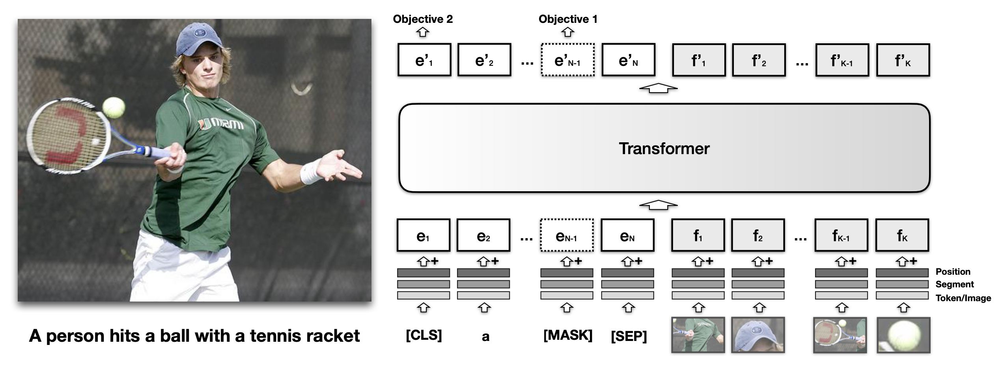
与泛化语言模型类似，VisualBERT 中的每个视觉嵌入也由三类嵌入求和得到，即词元化特征f_o、分段嵌入f_s和位置嵌入f_p，具体为：
该模型在 MS COCO 图像描述数据集上使用文本和图像作为输入来预测文本描述，并采用两种基于视觉的语言建模目标进行训练：
根据消融实验，最重要的配置是在 Transformer 层中较早地融合视觉信息，并在 COCO 描述数据集上进行预训练。从预训练 BERT 初始化以及采用句子-图像预测训练目标的影响相对较小。
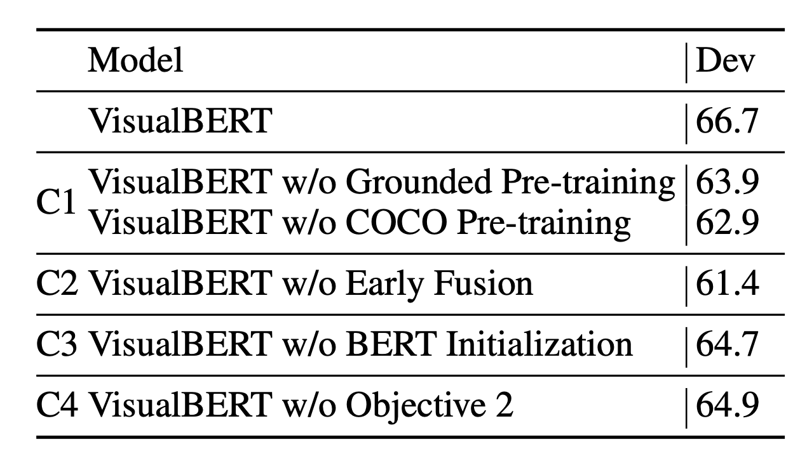
VisualBERT 在当时超过了 NLVR 和 Flickr30K 任务上的 SOTA，但在 VQA 上仍与 SOTA 存在一定性能差距。
SimVLM（Simple Visual Language Model；Wang et al. 2022) 是一个简单的前缀语言模型，其中前缀序列使用类似 BERT 的双向注意力处理，而主要输入序列仅使用类似 GPT 的因果注意力。图像被编码为前缀词元，使模型能够充分吸收视觉信息，随后以自回归方式生成对应文本。
受ViT和CoAtNet启发，SimVLM 将图像分割为较小的图像块，并展平为 1D 序列。他们使用 ResNet 前 3 个块组成的卷积阶段来提取上下文丰富的图像块，这种设置比简单的线性投影效果更好。
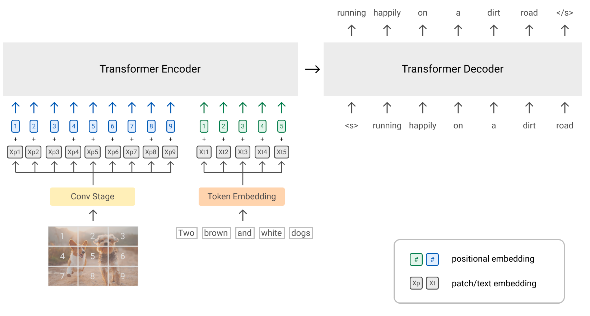
SimVLM 的训练数据包括来自 ALIGN (Jia et al. 2021) 的大量图像-文本对，以及来自 C4 数据集 (Raffel et al. 2019) 的纯文本数据。他们在每个批次中混合两种预训练数据，包含 4096 个图像-文本对（ALIGN）和 512 个纯文本文档（C4）。
消融研究表明，同时使用图像-文本和纯文本数据进行训练非常重要。PrefixLM 目标优于跨度破坏和朴素 LM。
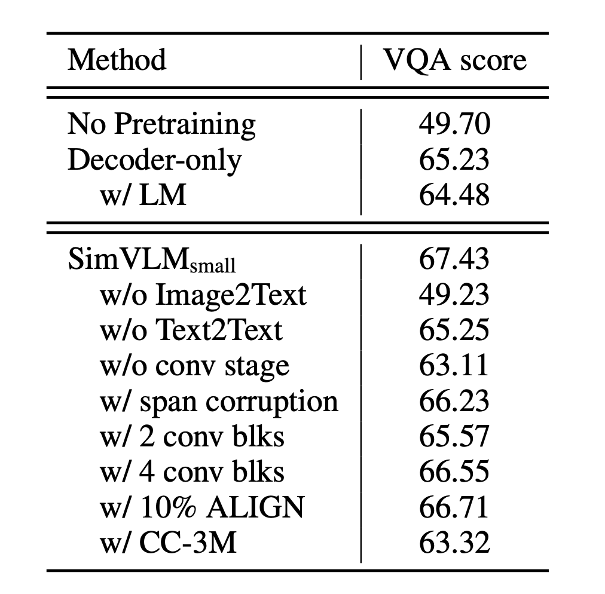
CM3（Causally-Masked Multimodal Modeling；Aghajanyan, et al. 2022) 是一个超文本语言模型，学习生成大规模 CC-NEWS 和 Wikipedia 文章的 HTML 网页内容（包括超文本标记、超链接和图像）。得到的 CM3 模型能够在任意掩码的文档上下文条件下生成丰富的结构化、多模态输出。
在架构上，CM3 是一个自回归模型。然而，为了结合因果语言建模和掩码语言建模，CM3 还会掩码少量长词元跨度，并在序列末尾尝试生成它们。
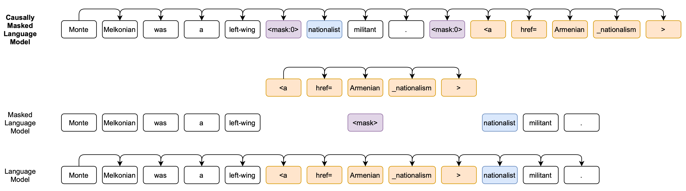
CM3 的训练数据集包含接近 1 万亿的网页数据。在预处理过程中，图像首先从 src 下载并调整为 256x256 大小并进行随机裁剪。随后使用VQVAE-GAN进行词元化，每个图像得到 256 个词元。这些词元用空格连接后重新插入 src 属性中。
CM3 可以通过提示工程完成以下几类任务：
Infilling Prompt: <figure>
<img src="{prefix}<mask:0>{postfix}"><mask:0>
Conditional Infilling Prompt:
<figure>
<img alt="Photo: {text}" src="{prefix}<mask:0>{postfix}"><mask:0>
Conditional Generation Prompt: <figure>
<img alt="{prompt}
Captioning Masked Prompt #1:
<figure>
<img alt="Photo: A photo taken of<mask:0>" src="{image}">
Captioning Causal Prompt #1:
<figure>
<img src="{image}" title="Photo: A photo taken of
Original: Manetho writes that these kings ruled from <a title="Memphis, Egypt">Memphis</a>
Prompt: Manetho writes that these kings ruled from <a title="<mask:0>">Memphis</a>...<mask:0>
Target: Manetho writes that these kings ruled from <a title="<mask:0>">Memphis</a>...<mask:0> Memphis, Egypt
将学到的图像嵌入作为（冻结的）语言模型前缀
如果我们不想在适配语言模型处理视觉信号时修改其参数怎么办？我们可以学习一个与语言模型兼容的图像嵌入空间。
受prefix或prompt可控神经文本生成的启发，Frozen (Tsimpoukelli et al. 2021) 和 ClipCap (Mokady, Hertz & Hertz, 2021) 在训练时仅更新视觉模块的参数，以生成能与预训练的冻结语言模型配合的图像嵌入。两者都在对齐的图像描述数据集上训练，根据图像和先前的文本词元来预测下一个文本词元。通过冻结语言模型参数，强大的语言能力得以保留。此外，尽管这种设置仅使用有限的图像描述数据训练，但在测试时仍可依赖语言模型的百科知识。
Frozen 的视觉编码器基于 NF-ResNet-50，使用全局池化层之后 NF-ResNet 的最终输出向量。Frozen VLM 可作为多模态少样本学习器，在测试时通过交替的图像和文本序列适应新任务，实现零样本或少样本迁移。

实验表明，对预训练语言模型进行微调反而会在 VQA 任务上导致更差的表现。从预训练版本初始化语言模型非常重要，从零开始训练({Frozen}_\text{scratch}) 几乎没有有意义的进展。基线{Frozen}_\text{train-blind} 会将图像涂黑，但仍能取得不错性能，这得益于预训练语言模型的固有能力。
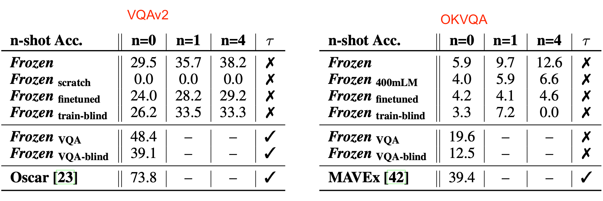
ClipCap 依赖对比表示学习 (Radford et al. 2021) 进行视觉编码，但需要经过一个轻量映射网络F 处理，使图像嵌入向量被转换到与预训练语言模型相同的语义空间。网络F 将 CLIP 嵌入映射为一系列k 个嵌入向量，每个向量的维度与 GPT2 中的词嵌入相同。增大前缀长度k 有助于提升性能。在训练过程中，CLIP 视觉编码器和语言模型均被冻结，仅学习映射网络F。他们发现当语言模型冻结时，F 应为 Transformer，由 8 层多头自注意力组成（每层 8 个头）；而当语言模型可微调时，一个 MLP 就足够了。
尽管 ClipCap 只训练了最少量的参数，它在图像描述任务上仍取得了在当时与 SOTA（如Oscar、VLP、BUTD）相当的性能。因此他们推测“CLIP 空间已经封装了所需信息，针对特定风格的适配并未带来更多灵活性。”

有趣的事实是——由于 ClipCap 将 CLIP 图像嵌入转换到了语言模型空间，处理后的前缀甚至可以被解释为单词。
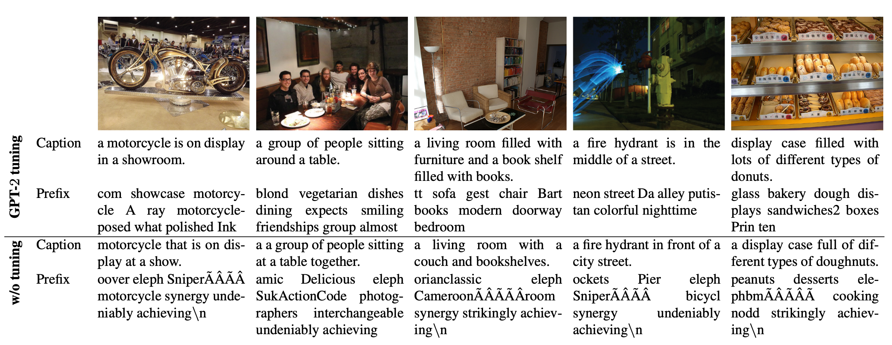
文本-图像跨注意力融合机制
为了更高效地将视觉信息融合到语言模型的不同层中，我们可以考虑专门设计的跨注意力融合机制，以平衡文本生成能力和视觉信息。
VisualGPT (Chen et al. 2021) 采用了一种自重生编码器-解码器注意力机制，能够用少量领域内图像-文本数据快速适配预训练语言模型。
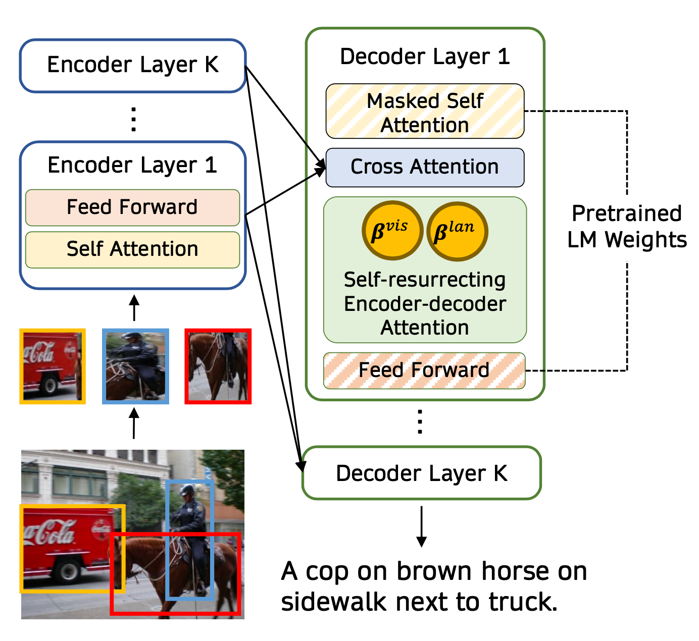
令I 为视觉编码器的输出，H 为语言模型解码器的隐藏状态。VisualGPT 引入了自重生激活单元（SRAU），通过两个互补门控B^\text{vis}和B^\text{lan} 来控制预训练语言信息H与视觉成分\text{EncDecAttn}(H, I)的权衡：
其中\otimes 是逐元素乘法，[i,j] 表示矩阵中的一个元素。\tau 是一个预定义的阈值超参数。
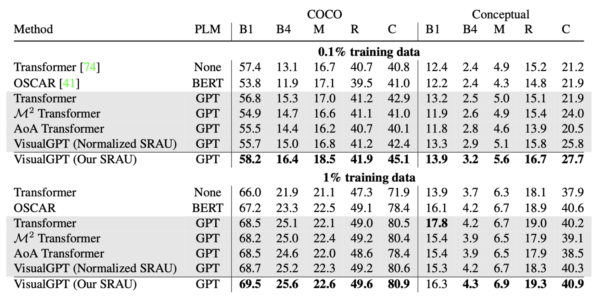
VC-GPT（Visual Conditioned GPT；Luo et al. 2022) 将预训练的视觉 Transformer（CLIP-ViT）作为视觉编码器，预训练语言模型作为语言解码器。

CLIP-ViT 接收图像块序列作为输入并输出每个块的表示。为了避免灾难性遗忘，VC-GPT 没有直接将视觉信息注入 GPT2，而是在视觉编码器和语言解码器的输出之上引入额外的跨注意力层。随后一个自集成模块线性组合单一模型的语言解码器 logith^G 和跨模型视觉-语言融合模块的 logith^\text{fuse}。自集成模块（见图 13 中的“VC-GPT w/o SE”）对性能至关重要。
其中W^G 是对语言解码器的线性投影，由 GPT2 的词嵌入矩阵初始化；W^\text{fuse} 是对融合模块的线性投影，随机初始化。
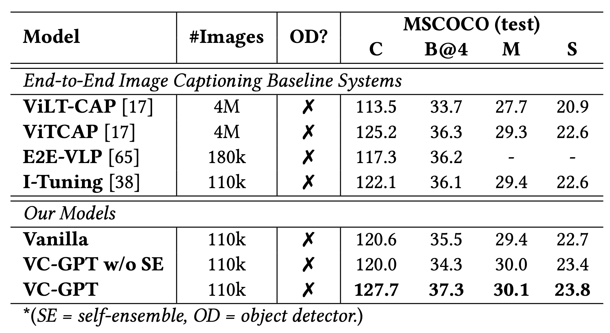
MERLOT (Zellers, et al. 2021) 使用 600 万个带转录语音的 YouTube 视频(YT-Temporal-180M) 进行训练，学习空间（帧级别）和时间（视频级别）目标，在微调后于 VQA 和视觉推理任务上表现出色。
每段视频\mathcal{V} 被分割成多个片段\{ \boldsymbol{s}_t \}，每个片段\boldsymbol{s}_t 包含从中间时间步提取的一帧图像\mathbf{I}_t 和关联的L=32 个词元。图像由学到的图像编码器编码，词元使用学到的嵌入编码。随后两者在联合视觉-语言 Transformer 中共同编码。
MERLOT 有三个学习目标：
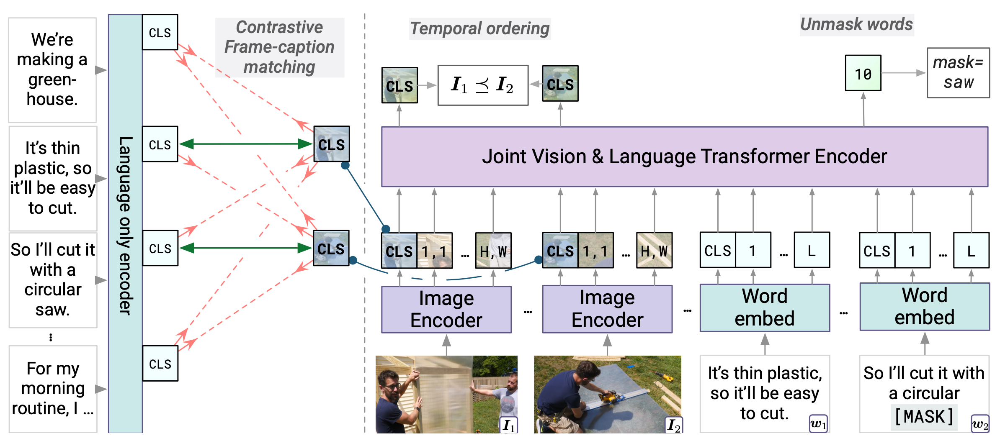
消融研究表明，（1）使用视频而非图像训练、（2）扩大训练数据集的规模和多样性、（3）使用多样化的目标来鼓励全栈多模态推理非常重要。
Flamingo (Alayrac et al. 2022) 是一种视觉语言模型，接受交替出现的文本和图像/视频，并输出自由形式的文本。Flamingo 通过一个基于 Transformer 的映射器将预训练语言模型和预训练视觉编码器（即 CLIP 图像编码器）连接起来。为了更高效地整合视觉信号，Flamingo 采用Perceiver架构，从大量视觉输入特征中生成几百个词元，然后使用与语言模型层交替的跨注意力层将视觉信息融合到语言解码过程中。训练目标是自回归的负对数似然损失。
与 ClipCap 类似，训练过程中两个预训练模型均被冻结，因此 Flamingo 只需训练如何将现有强大的语言和视觉模型和谐地连接起来。ClipCap 与 Flamingo 的主要区别在于，前者将图像嵌入视为语言模型的简单前缀，而后者使用门控跨注意力-稠密层来融合图像信息。此外，Flamingo 使用了比 ClipCap 多得多的训练数据。
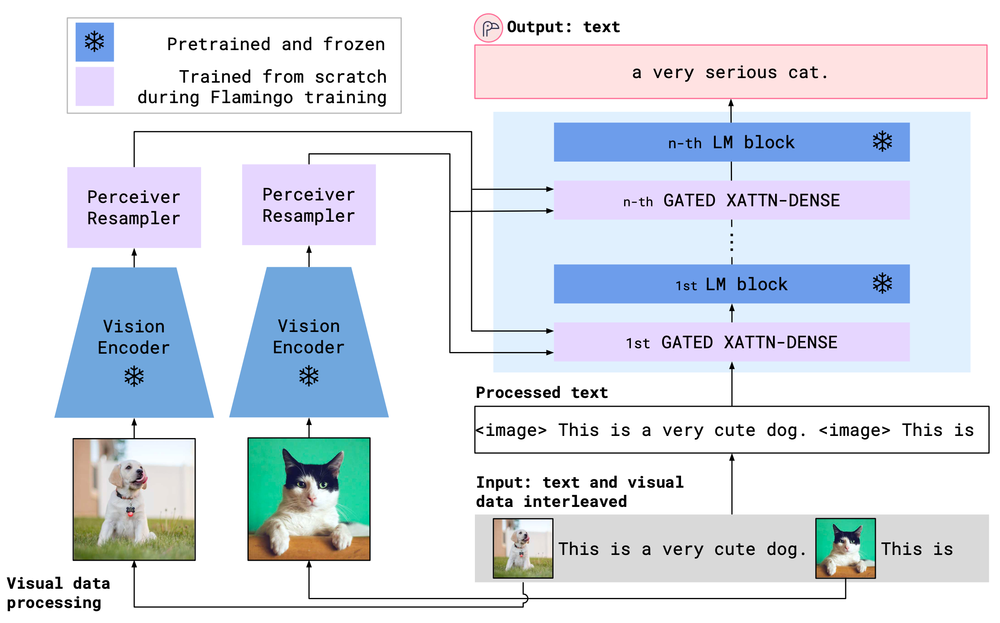

为了方便处理交替出现的文本和图像，Flamingo 的掩码设计使得文本词元仅关注对应于最后一个前置图像的视觉词元，大大减少了某个文本词元能看到视觉词元的数量。他们发现这种方式比允许文本词元直接关注所有前置图像效果更好。文本仍能通过文本编码器中的因果自注意力依赖访问所有先前的图像。这种设计可以处理任意数量的上下文图像。
他们从互联网抓取了 4300 万个网页，构成了 MultiModal MassiveWeb（M3W）数据集，其中包含交替出现的文本和图像。此外，Flamingo 还在配对的图像/文本和视频/文本数据集上训练，包括 ALIGN、LTIP 和 VTP。
互联网数据集的数据处理包括：
由于 Flamingo 在三种不同数据集的混合上训练，它优化的是数据集特定负对数似然损失的加权和。调整数据集权重对最终性能非常重要。在实践中，他们不是在数据集之间轮询，而是从每个数据集采样一个批次，并在每次更新中对这些梯度进行加权求和。跨不同异构数据集的梯度累积可以看作稳定训练的一种手段，因为它减少了每次更新之间的梯度方差。
在测试时，Flamingo 自然支持少样本学习，因为它可以处理任意交替的文本和图像序列。上下文中的示例越多，性能越好。
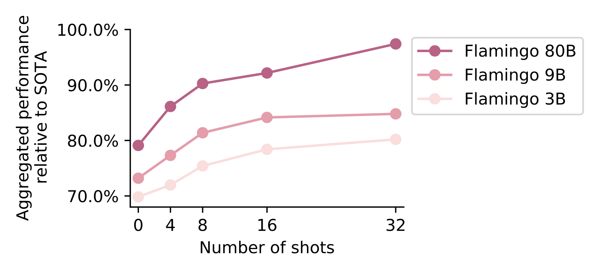
Flamingo 在 16 个任务中的 6 个上超过了 SOTA 微调模型，尽管它完全没有进行任何微调，而只使用了少样本提示。对 Flamingo 进行微调代价高昂且难以进行超参数调优，但确实能带来更好的结果。
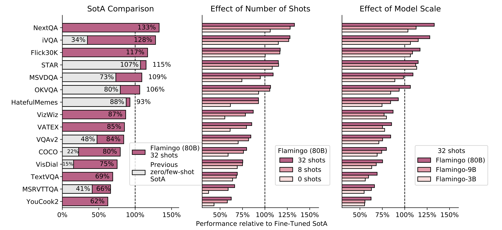
CoCa（Contrastive Captioner；Yu & Wang et al., 2022) 同时兼具对比学习和图像到描述生成的优点。它是一个同时用 CLIP 风格表示上的对比损失和图像描述生成损失联合训练的模型，在多种多模态评估任务上实现了 SOTA 零样本迁移性能。

CoCa 从零开始预训练，使用网络规模的 alt-text 数据 ALIGN 和将所有标签视为文本的 JTB-3B 标注图像。
CoCa 有两个主要训练组件。最终损失是以下两项损失的加权和，权重系数为\lambda_\text{cap}=2.0, \lambda_\text{con} = 1.0：
CoCa 在 VQA 上优于仅使用对比学习的模型，并与仅使用描述生成的模型相当。描述损失也被发现对零样本分类能力有益。
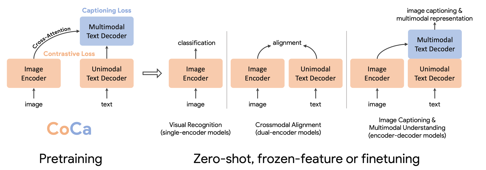
他们使用任务特定的注意力池化（或称注意力池化器）作为自然的 task adapter，因为他们发现单个池化后的图像嵌入有助于视觉识别任务（如 ImageNet 分类），而更细粒度的嵌入有助于多模态理解任务（如 VQA）。池化器是一个单层多头注意力，包含n_\text{query} 个可学习的查询（注意\mathbf{X} \in \mathbb{R}^{L \times d}、\mathbf{W}^q \in \mathbb{R}^{d \times d_q} 和 d_k = d_q），以编码器输出同时作为键和值。CoCa 在预训练中使用注意力池化器来计算生成损失n_\text{query} = 256 和对比损失n_\text{query} = 1。这使得模型作为冻结编码器时，只需学习一个新的池化器来聚合特征即可获得强大性能。
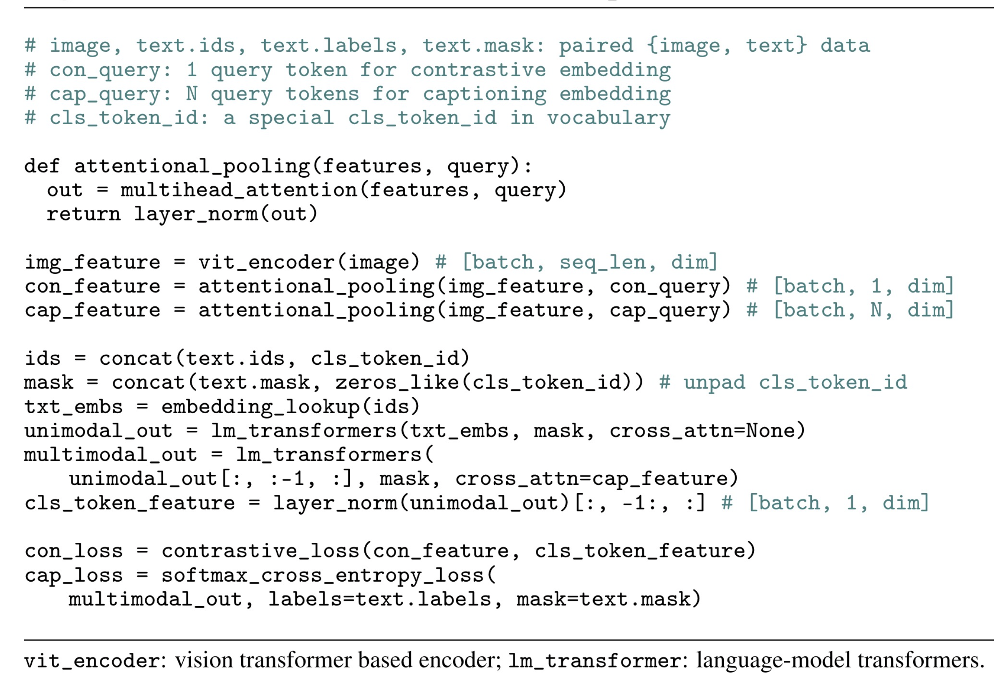
无需训练
最后，无需训练任何额外参数，仅通过拼接预训练的语言模型和视觉模型即可解决视觉语言任务。
基于视觉得分的引导解码
MAGiC（iMAge-Guided text generatIon with CLIP；Su et al. 2022) 根据一个基于 CLIP 的名为 magic score 的得分进行可控神经文本生成 来采样下一个词元，而无需微调。生成的文本被鼓励与给定图像相关，同时仍保持与之前生成文本的一致性。
在时间步t 的下一个词元x_t 根据以下公式选择。模型置信度和退化惩罚(Su et al. 2022) 被加入以避免语言模型生成退化文本。
其中\mathcal{I} 是输入图像；\mathcal{V}^{(k)} 包含语言模型p 预测的前k 个可能的词元；\boldsymbol{x}_{<t} 指时间步t 之前已生成的词元；h_v 是词元v 在拼接\boldsymbol{x}_{<t} 和 v 的条件下由语言模型计算得到的表示；h^\text{image}(.) 和 h^\text{text}(.) 分别是 CLIP 图像和文本编码器生成的嵌入。
与其他无监督方法相比，MAGiC 具有不错的性能，但与有监督方法仍存在较大差距。
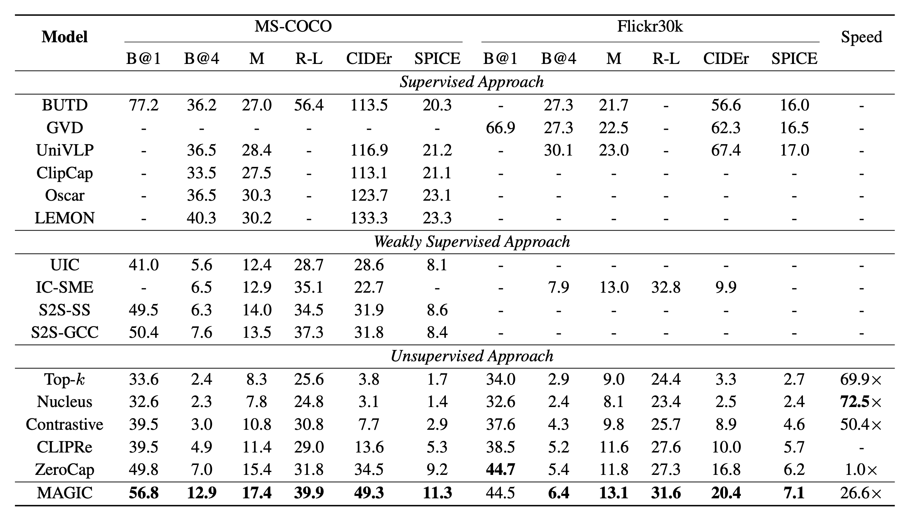
将语言作为通信接口
对于基于知识的视觉问答任务，PICa（Prompts GPT-3 via the use of Image Captions；Yang et al. 2021) 首先将图像转换为描述或标签，然后使用少样本示例来提示 GPT-3 提供答案。图像描述或标签由现有模型（如VinVL）或 Azure Tagging API 提取。GPT-3 被视为一个非结构化的、隐式的知识库。

PICa 探索了两种改进少样本示例的方法以获得更好结果：
这种仅使用 16 个示例的简单方法在 OK-VQA 上将 SOTA 提升了 8.6 个点，并在 VQAv2 上取得了不错表现。
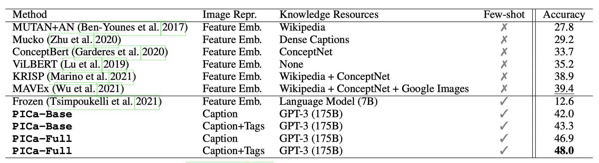
Socratic Models (SM) (Zeng et al. 2022) 是一个通过语言（提示）将多个预训练的多模态模型组合成一个模型的框架，而无需进一步训练。这里语言被视为不同模型之间交换信息的中间表示。核心思想是使用多模型多模态提示，将非语言模型的输出插入到语言提示中，然后用于语言模型进行推理。
让我们看一个具体例子。给定一个以自我为中心（ego-centric）的视频（图像+音频），SM 可以使用文本到文本的 LM、图像到文本的 VLM 和语音到文本的 ALM 生成人物活动摘要。它们按以下方式链式连接：
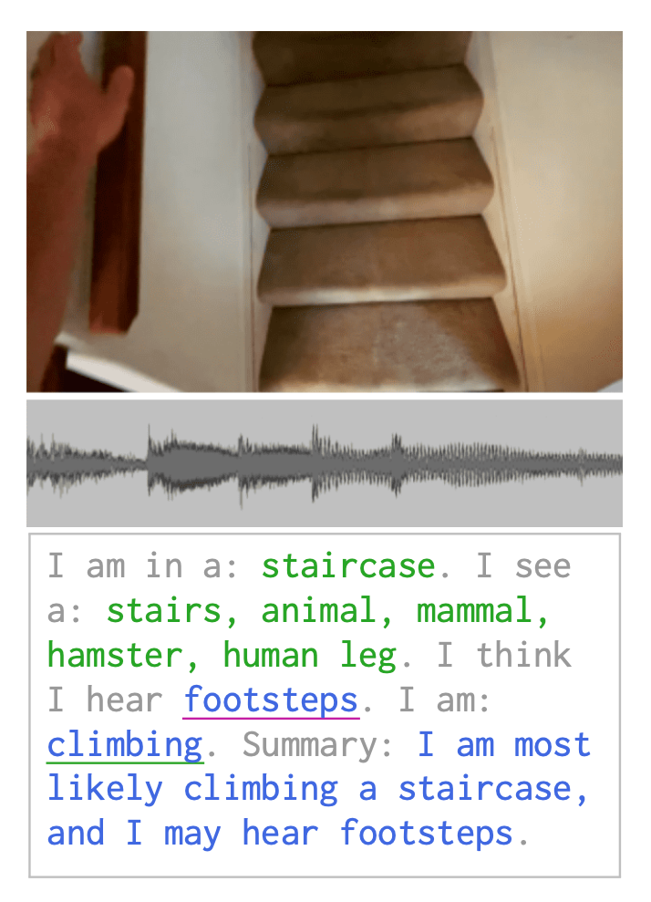
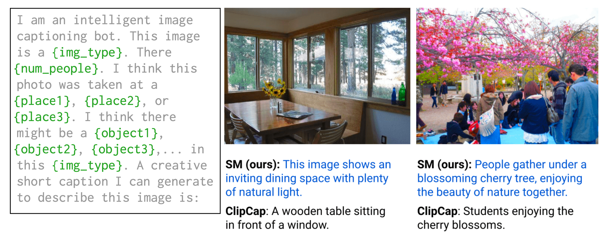
SM 可以通过先使用 VLM 零样本预测不同地点类别、物体类别、图像类型和人数，然后将填充了 VLM 输出的语言提示送入因果语言模型生成描述候选，来生成图像描述。Socratic 方法在图像描述上仍与 ClipCap 存在性能差距，但鉴于它完全不涉及任何训练，已经相当不错。
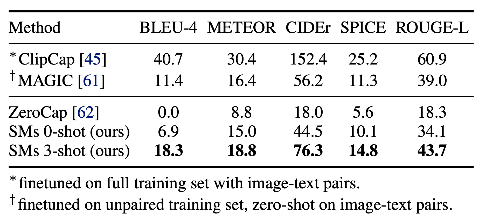
SM 框架非常灵活，可用于比图像描述复杂得多的任务。例如，以自我为中心的感知（用户输入 + VLM + LM + ALM）任务是以自我为中心的视频作为输入，来（1）总结内容；（2）回答自由形式的推理问题；（3）进行未来预测。
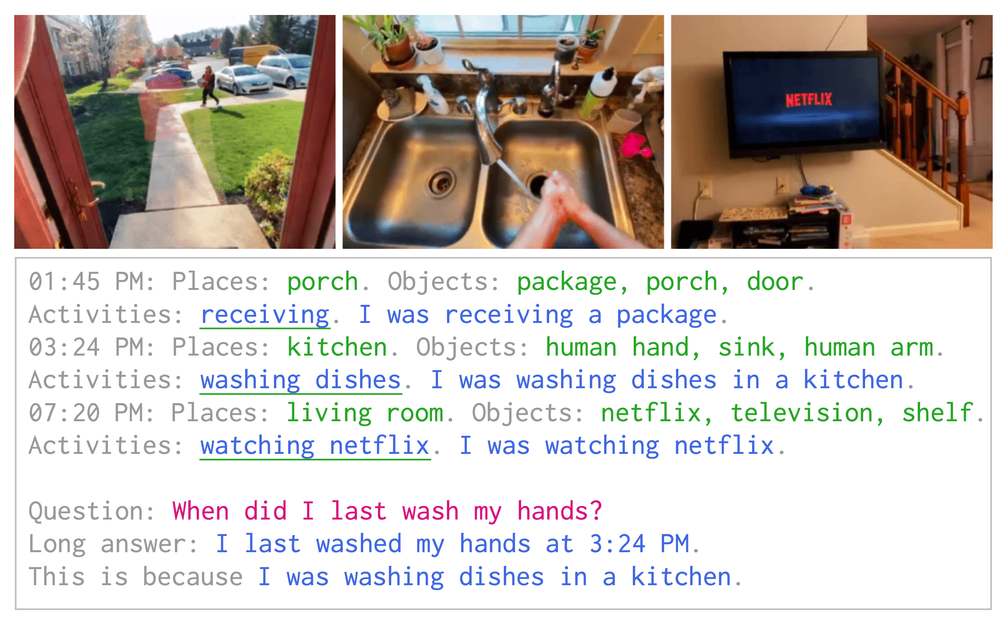
数据集
图像描述数据集
图像-文本配对数据集
(*) 非公开数据集。
评估任务
视觉问答
给定一张图像和一个问题，任务是正确回答该问题。
视觉语言推理
视频问答与理解
引用
引用方式：
Weng, Lilian. (Jun 2022). Generalized visual language models. Lil’Log. https://lilianweng.github.io/posts/2022-06-09-vlm/.
@article{weng2022vlm,
title = "Generalized Visual Language Models",
author = "Weng, Lilian",
journal = "Lil'Log",
year = "2022",
month = "Jun",
url = "https://lilianweng.github.io/posts/2022-06-09-vlm/"
}
参考文献
[1] Li et al. “VisualBERT: A Simple and Performant Baseline for Vision and Language.” arXiv preprint:1908.03557 (2019).
[2] Wang et al. “SimVLM: Simple Visual Language Model Pretraining with Weak Supervision.” ICLR 2022.
[3] Aghajanyan, et al. “CM3: A Causal Masked Multimodal Model of the Internet.” arXiv preprint arXiv: 2201.07520 (2022).
[4] Tsimpoukelli et al. “Multimodal Few-Shot Learning with Frozen Language Models.” NeuriPS 2021.
[5] Mokady, Hertz & Hertz. “ClipCap: CLIP Prefix for Image Captioning.” 2021.
[6] Chen et al. “VisualGPT: Data-efficient Adaptation of Pretrained Language Models for Image Captioning.” arXiv preprint arXiv:2111.09734 (2021).
[7] Luo et al. “A Frustratingly Simple Approach for End-to-End Image Captioning.” arXiv preprint arXiv:2201.12723 (2022).
[8] Zellers et al. “MERLOT: Multimodal neural script knowledge models.” NeuriPS 2021.
[9] Alayrac et al. “Flamingo: a Visual Language Model for Few-Shot Learning.” arXiv preprint arXiv:2204.14198 (2022).
[10] Yu & Wang et al. “CoCa: Contrastive Captioners are Image-Text Foundation Models.” arXiv preprint arXiv:2205.01917 (2022).
[11] Yang et al. “An Empirical Study of GPT-3 for Few-Shot Knowledge-Based VQA.” arXiv preprint arXiv:2109.05014 (2021).
[12] Su et al. “Language models can see: Plugging visual controls in text generation.” arXiv preprint arXiv:2205.02655 (2022).
[13] Zeng et al. “Socratic Models: Composing Zero-Shot Multimodal Reasoning with Language.” arXiv preprint arXiv:2204.00598 (2022).